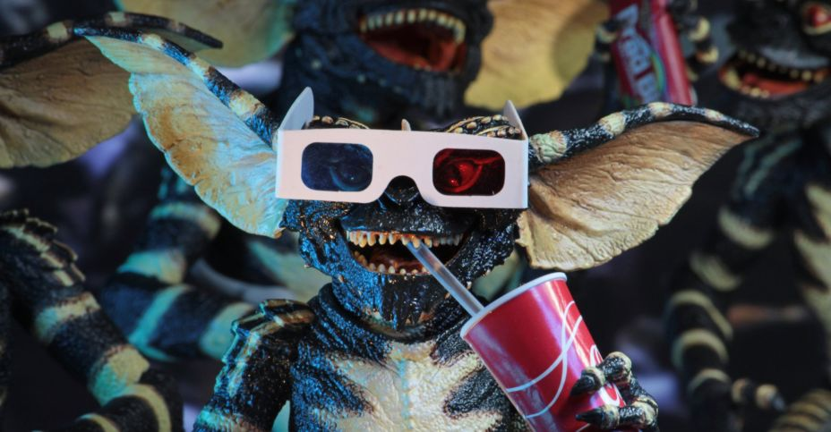
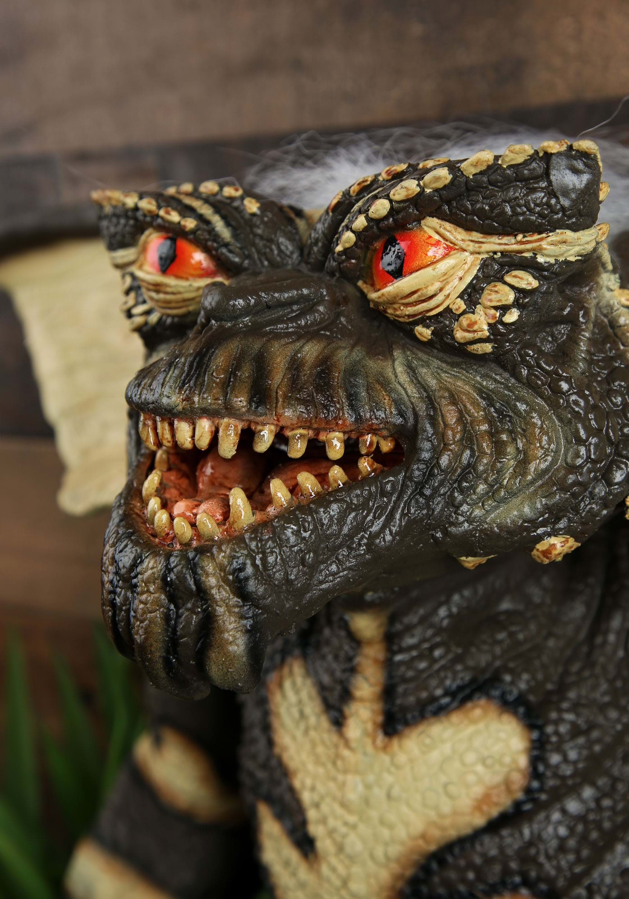

Today's Vibes

"just got a little concerned about whether or not, if i was a ghost, I'd be a cool ghost or a ghost people didnt like"
- Nico Budde, 2023
Here, Nico is going through trauma he invented himself. Kind of impressicve tbh
His Mood Board
Nico on Good Days

Nico on Bad Days

Highlights of Today
- Whenever he had 2 sips of water and a ferrero rocher and considered it breakfast
- When he thought going to the UREC would solve his problems
- When he processed his emotions on a fake website for class
Plans for Today
- To eat something besides Forrero Rocher
- To submit his grad school application
- To not stress himself for absolutely no reason